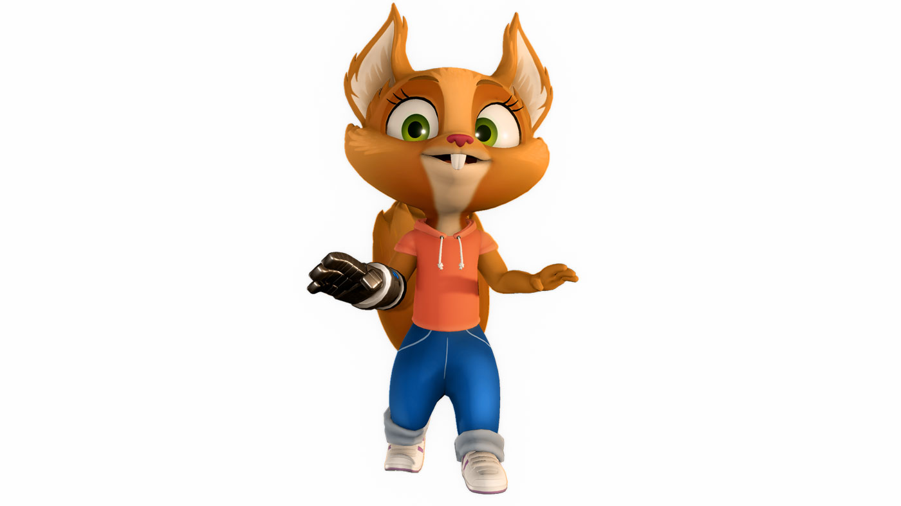
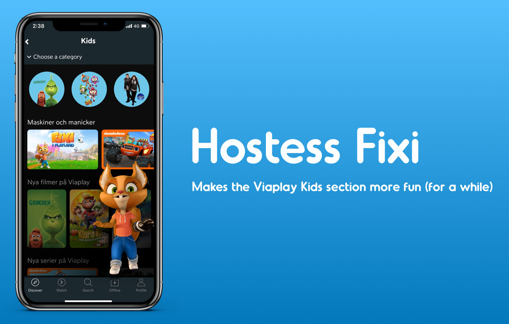
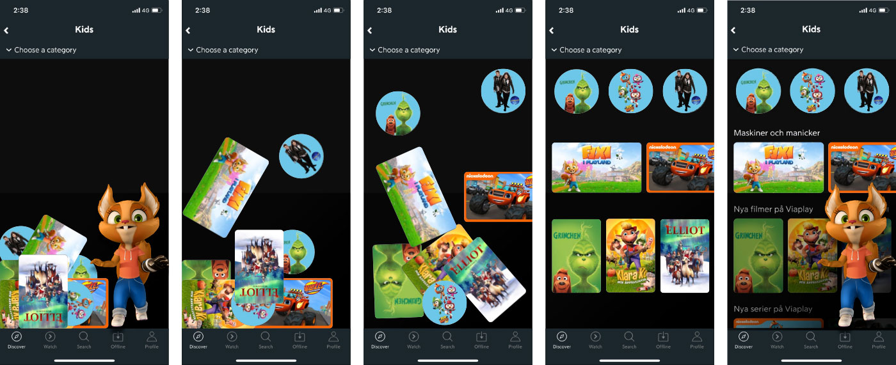
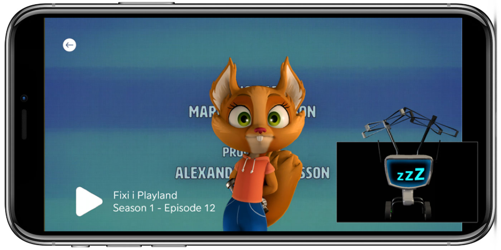

Client: Viaplay
Goal: Make children want to come back to Viaplay more often, without encouraging binge watching
Desired impact: Increased retention among families with small children
Team: Me and Jina Kim, both of us did concept and product design
During this 48 hour hackathon Viaplay presented an opportunity to use their original character Fixi within the kids section of the app.
Fixi has her own show called “Fixi in Playland” and it has one season so far. She is a squirrel who lives in Playland and makes sure people can see the shows they want on Viaplay by sending them through red tubes.
My biggest takeaways from the research Viaplay provided us with were:
Hostess Fixi - makes the Viaplay kids section more fun (for a while).
Our concept Hostess Fixi won first prize in the Viaplay hackathon.
Fixi is not a regular hostess. There are three ways that make her something out of the ordinary…
Everyday in the Kids section Fixi needs help with a daily puzzle. Once completed, Fixi is happy. 
The daily puzzles could be adapted to the current weather and time of year. For example: find Fixi’s rain hat, gather snow, remove leaves, find hidden gingerbread cookies or sort out the home screen when someone has made a mess!
Instead of just clicking on the show, children can give it to Fixi. Her signature red pipes will appear on the screen and the show has to go through them, just like in Fixi in Playland.
Drag a show you want to play to Fixi. Move it through the tube by tilting the device.
Fixi appears in between episodes and announces the next one. After 15 minutes of screen time Fixi will say her goodbyes and wish the user a nice dinner, a good night’s sleep or a fun day at school. This encourages children to do the same and leave Viaplay. At the same time it gives them an incentive to come back the next day when Fixi is back.
After 15 minutes of screen time Fixi will say her goodbyes. Children can continue watching as long as they want, but it won’t be as fun if Fixi is not there anymore.
“You won because you solved our business challenge”
- Head of Product, Viaplay